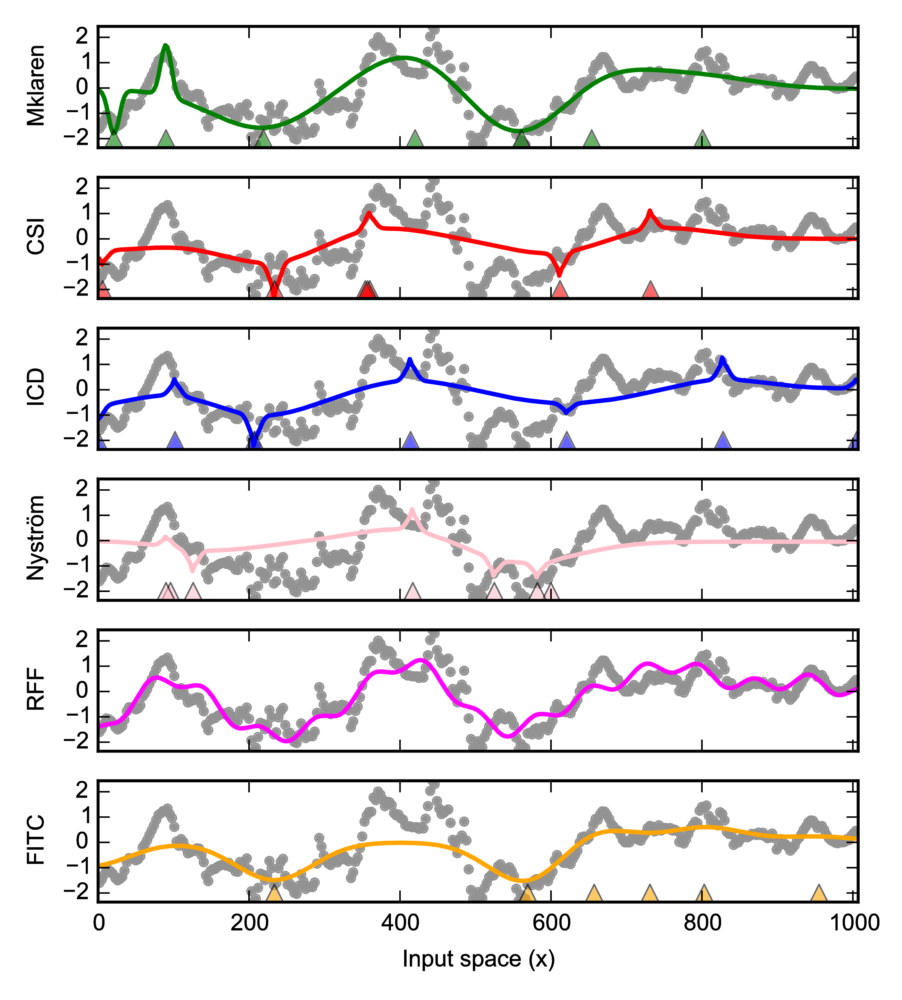
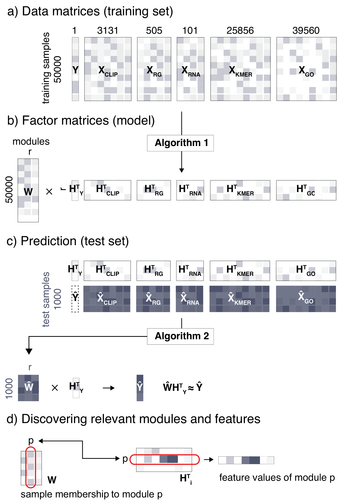
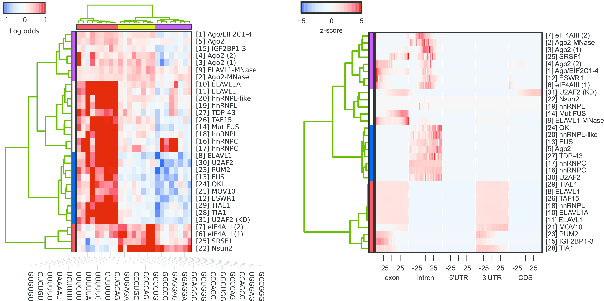
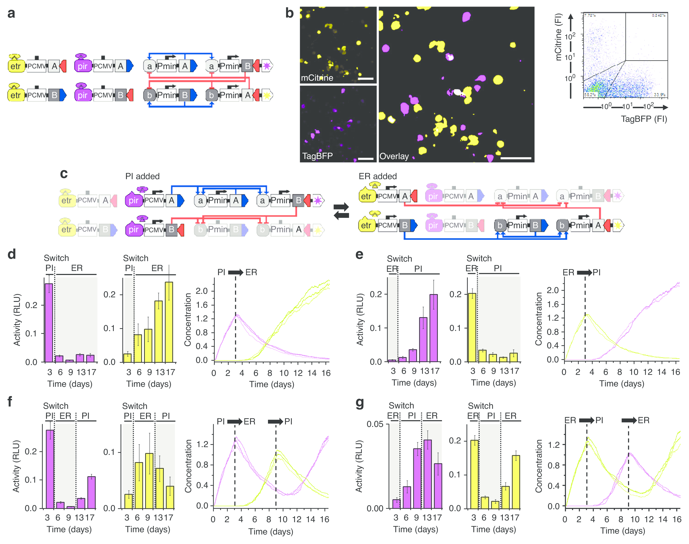
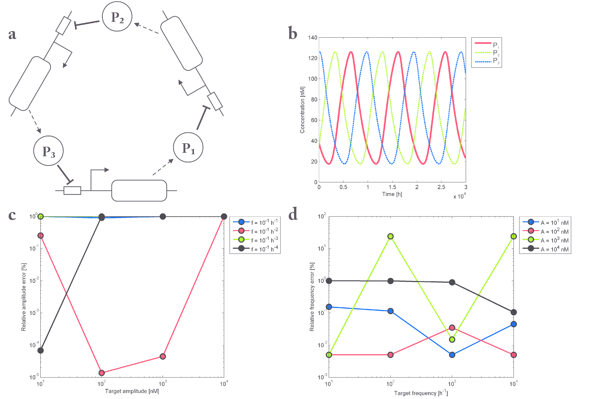
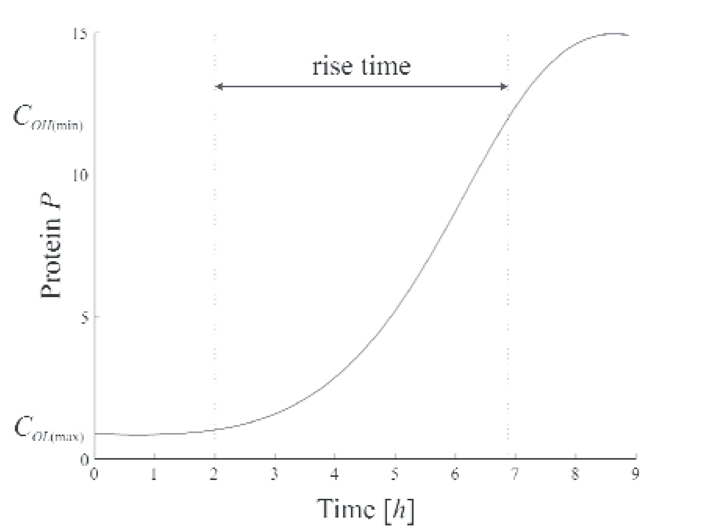
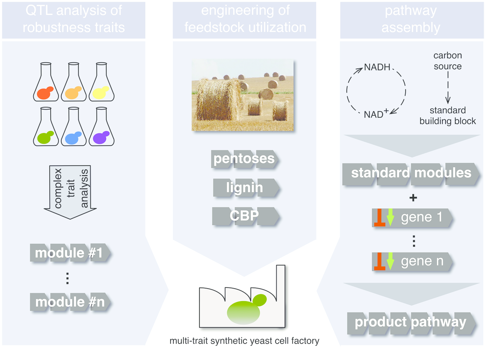

The Mklaren model. Overview of variables included in the hypothetical model using three kernels. Dashed values in the kernel matrices are never computed explicitly. The circles, rectangles and triangles represent the selected pivot columns for kernels 1, 2 and 3, respectively.
Experimental evaluation of kernel regression approximation models. Selected example of a time series fit with the exponentiated quadratic kernels using different kernel (matrix) approximation models. The predictions for each model are compared to the test data points (in gray). The locations of selected inducing points are marked with triangles near the bottom edge (where applicable).
Overview of the iONMF model and analysis steps. a) Target column vector $\myclip$ and other data sources $\mx{X}_i$ used for training. b) iONMF factorization (Algorithm~\ref{a:onmf}) approximates the data sources with a factor model (common coefficient matrix \mx{W} and a basis matrix $\mx{H}_i$ for each data source). c) Prediction of test samples (Algorithm~\ref{a:prediction}) uses the basis matrices $\mx{H}_i$, $\mx{H}_Y$ and test sample data $\hat{\mx{X}_i}$ to estimate the coefficient matrix $\hat{\mx{W}}$ and predict $\hat{\myclip}$. d) Samples are assigned to modules based on rows in $\mx{W}$. Row $p$ in $\mx{H}_i^T$ describes the characteristic feature values of each module ($p$).
Post-hoc comparison of RNA-binding proteins based on iONMF. (left) Hierarchical clustering (Ward’s linkage) of proteins and 20 most common complex motifs, estimated from row vectors HKMER obtained with iONMF. Heatmap shows log odds ratios of observed motif probability in sites proximal to crosslinked sites divided by the expected probability. (right) Protein similarity based on gene region types row vectors in HRG. For each region type, the interval [-50..50] relative to the crosslinked sites is shown.
Regulated transitions between the two stable states of the switch. (a) Introduction of minimal promoters into the TALE-based competitive feedback switch. The mutual TALE repressors and the corresponding TALE activators of the feedback loop are placed under the control of a minimal promoter. (b) Confocal microscopy analysis of the TALE-based competitive feedback switch in the absence of external regulation indicates bimodal distribution of fluorescent proteins. Cells expressing either a TagBFP or mCitrine reporter are marked in magenta or yellow, respectively. Cells expressing both reports at the same time (3%) are marked white on the overlay image. Scale bar, 50 mm. (c) Schematic representation of toggling between the pristinamycin (PI)- and erythromycin (ER)-induced states. (d–g) Switching between stable states was experimentally tested using luminometry. The purple bar graphs represent firefly luciferase activity in a switch in which the luciferase gene was used to replace the TagBFP reporter, while the yellow bar graphs correspond to the version with the luciferase gene replacing the mCitrine reporter. Switching between the states was tested in both directions, (d) pristinamycin–erythromycin (PI-ER) and (e) erythromycin–pristinamycin (ER-PI), as well as for multiple switch events: (f) pristinamycin–erythromycin–pristinamycin and (g) erythromycin–pristinamycin–erythromycin. Experimental results are in agreement with the stochastic models (shown on the right side of the panels) and demonstrate transitions between the on and off states depending on the presence of the selected chemical inducer as described in Supplementary Note 2. Results are representative of at least three independent experiments.
Model of a repressilator based on three transcriptional repressors. a) Schematic representation of the repressilator circuit b) Simulation of optimal solution of parameter space search for target amplitude A = 100 and frequency f = 0.0001h−1. Parameters used: α0 = 2.288−7, α1 = 1.94, β = 0.0002, n = 4.199, γ = 0.0005, η = 0.007, k = 45.313, τ = 0.09. c) Comparison of parameters space investigation for amplitudes and frequencies of varying orders using Equations 9 and 10 (circles) or Equations 11 and 12 (squares). The y axis shows the relative amplitude error regarding the target amplitude. d) Comparison of parameters space investigation for amplitudes and frequencies of varying orders of magnitude Equations 9 and 10 (circles) or Equations 11 and 12 (squares). The y-axis shows the relative frequency error regarding the target frequency.
Protein expression modelling. Evaluating the rise time of protein P according to the model presented in Equations (3) and (4) and the parameter values derived from [9].
The assembly of a multi-trait yeast cell factory.The future yeast cell factory strains will require combinations of several traits, each of which will be encoded by a specific genetic module (depicted by strings of arrows) engineered using the state-of-the-art synthetic biology approaches, such as marker-free multiplex genome editing and orthogonal promoter libraries. In the future, individual “ready-to-use” modules should become available for fast transfer of the desired traits to the recipient strain in any combination. The order in which the respective modules are introduced will depend upon the specific conditions/requirements. Left Depending on the biotechnological process, different robustness traits will have to be introduced into the starting strain (e.g. tolerance to extreme pH, osmotic stress, organic acids or other toxic substances). Following the isolation of strains with superior performance with regard to specific traits (depicted by different colours), causal genes can be identified by polygenic trait analysis and/or by bioinformatics methods, as described in the text. Centre Optimization of the strains for efficient utilization of renewable feedstocks is another important aspect in engineering multi-trait yeast cell factories. Utilization of pentoses, especially xylose, and in the future also of lignin, will enable more cost effective production of biochemicals. The next generation of yeast cell factories will be capable of consolidated bioprocessing (CBP), as described in the text. Right The biosynthesis pathway for the desired product could consist of a number of endogenous and/or heterologous genes. These genes will be combined with standard modules that will provide common building blocks or contribute to cofactor balance (The image in B is a detail from Champs DSC01354 by Daplaza, licensed under CC BY-SA 2.5).